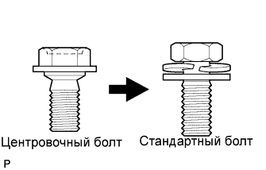
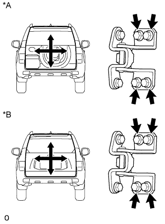
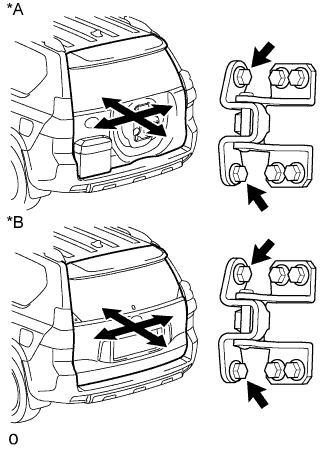
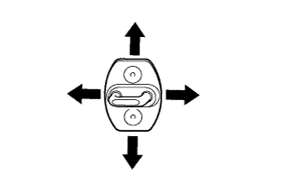
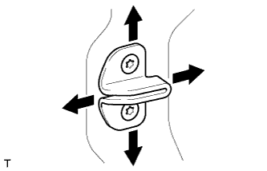
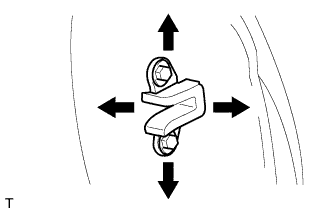

ДВЕРЬ БАГАЖНОГО ОТДЕЛЕНИЯ > РЕГУЛИРОВКА |
|  |
| 1. ПРОВЕРЬТЕ ДВЕРЬ БАГАЖНОГО ОТДЕЛЕНИЯ |
Для моделей с кронштейном запасного колеса на двери багажного отделения:
Убедитесь, что измеренные зазоры на участках от A до I находятся в допустимом диапазоне.
| Область | Измерение | Область | Измерение |
| А | 8,35 - 11,35 мм (0,329 - 0,447 дюйма) | B | 4,65 - 7,65 мм (0,183 - 0,301 дюйма) |
| C | 5,05 - 8,05 мм (0,199 - 0,317 дюйма) | D | 5,25 - 8,25 мм (0,207 - 0,325 дюйма) |
| E | 5,25 - 8,25 мм (0,207 - 0,325 дюйма) | F | 8,85 - 11,85 мм (0,348 - 0,467 дюйма) |
| G | 4,85 - 7,85 мм (0,191 - 0,309 дюйма) | H | 5,25 - 8,25 мм (0,207 - 0,325 дюйма) |
| I | 5,25 - 8,25 мм (0,207 - 0,325 дюйма) | - | - |
Для моделей без кронштейна запасного колеса на двери багажного отделения:
Убедитесь, что измеренные зазоры на участках от A до I находятся в допустимом диапазоне.
| Область | Измерение | Область | Измерение |
| А | 8,35 - 11,35 мм (0,329 - 0,447 дюйма) | B | 5,05 - 8,05 мм (0,199 - 0,317 дюйма) |
| C | 4,65 - 7,65 мм (0,183 - 0,301 дюйма) | D | 4,95 - 7,95 мм (0,195 - 0,313 дюйма) |
| E | 4,95 - 7,95 мм (0,195 - 0,313 дюйма) | F | 8,85 - 11,85 мм (0,348 - 0,467 дюйма) |
| G | 4,65 - 7,65 мм (0,183 - 0,301 дюйма) | H | 4,95 - 7,95 мм (0,195 - 0,313 дюйма) |
| I | 5,05 - 8,05 мм (0,199 - 0,317 дюйма) | - | - |
| 2. ОТРЕГУЛИРУЙТЕ ДВЕРЬ БАГАЖНОГО ОТДЕЛЕНИЯ |
Для моделей с кронштейном запасного колеса на двери багажного отделения:
Снимите накладку чехла запасного колеса (Нажмите здесь).
Снимите чехол запасного колеса (Нажмите здесь).
Снимите запасное колесо.
|  |
Ослабьте болты крепления дверных петель на кузове и отрегулируйте положение двери.
| *A | для моделей с кронштейном запасного колеса на двери багажного отделения |
| *B | для моделей без кронштейна запасного колеса на двери багажного отделения |
Затяните болты петель на кузове.
|  |
Ослабьте болты крепления петель на двери и отрегулируйте положение двери.
| *A | для моделей с кронштейном запасного колеса на двери багажного отделения |
| *B | для моделей без кронштейна запасного колеса на двери багажного отделения |
Затяните болты петель на двери.
|  |
С помощью торцевого ключа "TORX" T40 отрегулируйте положение защелки, слегка ослабив крепежные винты защелки и подбив ее молотком с пластмассовым покрытием.
С помощью торцевого ключа "TORX" T40 затяните винты крепления защелки.
|  |
С помощью торцевого ключа "TORX" T30 отрегулируйте положение охватываемого бокового упора двери багажного отделения, слегка ослабив крепежные винты упора и подбив его молотком с пластмассовым покрыванием.
С помощью торцевого ключа "TORX" T30 затяните винты крепления охватываемого упора.
|  |
Ослабьте болты крепления охватывающего бокового упора двери багажного отделения и отрегулируйте положение упора.
Затяните болты крепления охватывающего упора.
Для моделей с кронштейном запасного колеса на двери багажного отделения:
Установите запасное колесо.
Установите чехол запасного колеса (Нажмите здесь).
Установите накладку чехла запасного колеса (Нажмите здесь).